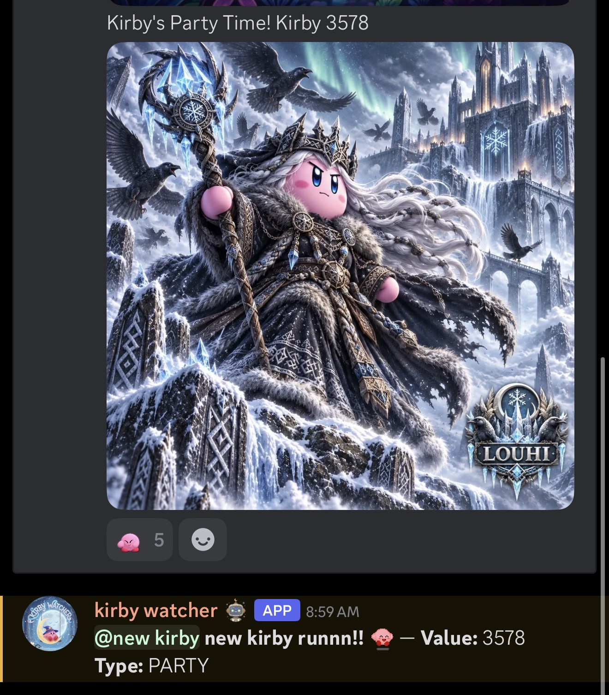
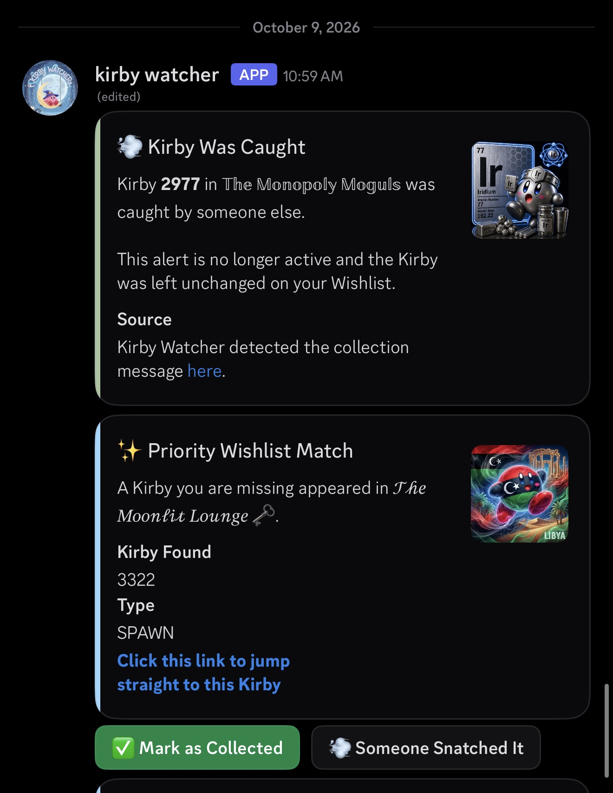

Examples of server notifications and personal wishlist alerts, powered by Kirby bot's announcements and collection results.
These screenshots show Watcher's operation before its Message Content access was removed. Live collection tracking is currently unavailable while access is being requested.
For servers & communities
A party message becomes a server alert.
Kirby bot announces a party for Kirby 3578. Watcher identifies the Kirby number and event type, then posts the matching server alert with the configured role ping.
This automatic notification depends on reading another bot's message content. The game announcement does not invoke a Watcher command.

The source party announcement and Watcher's corresponding alert are visible together. Open full-size screenshot
For collectors
Personal alerts stay in step with collection results.
Watcher sends a Priority Wishlist Match when a missing Kirby appears in a selected server. The screenshot also shows a separate alert updated after Kirby 2977 was collected by someone else: the alert is marked inactive and the user's wishlist remains unchanged.
The wishlist match for 3322 and the collection update for 2977 are separate examples. Their original Kirby bot messages are not visible in this screenshot.

Watcher links users to the source game messages and provides wishlist controls. Open full-size screenshot